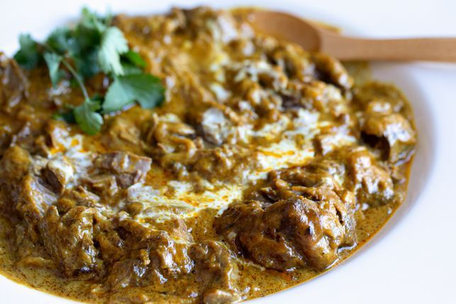
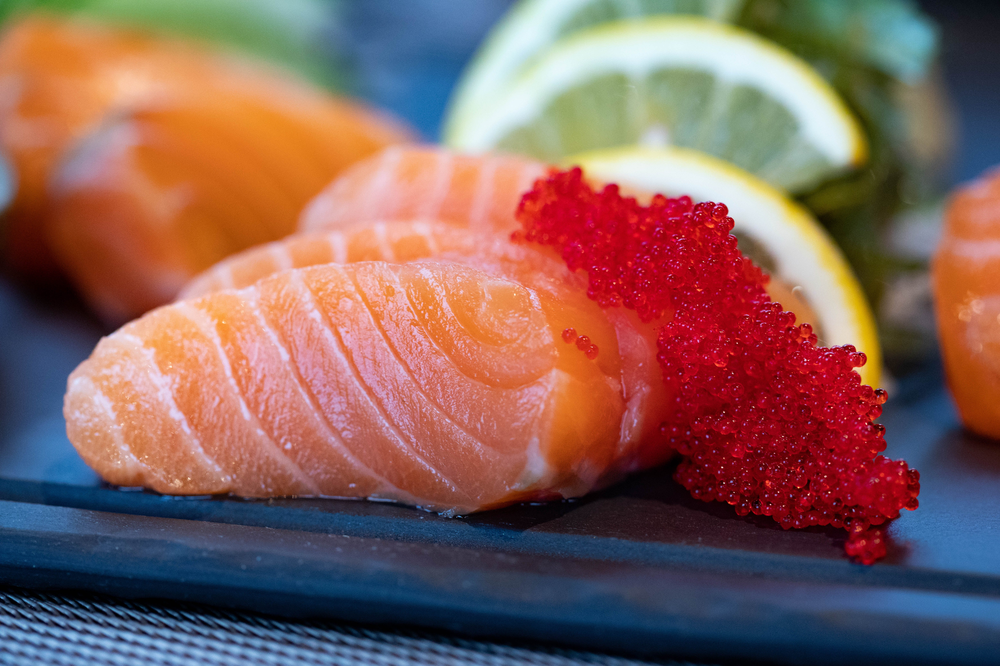

Recommendations
Old Town Draught House
Located right off of Spring Garden in the middle of campus, Old Town Draught House offers a cozy pub atmosphere and a wide selection of craft beers on tap. If you're in the mood for a burger or a chicken philly with your beer, this is the place to go!
Address: 1205 Spring Garden Street, Greensboro, NC 27401
Hours: Every Day: 11:00 AM - 11:00 PM
Special promotion: Enjoy $1 off any craft beer during Happy Hour!
Raaz Indian Kitchen
I am a huge Indian food lover, but sometimes it is just too far away to satisfy those taste buds you have! Here comes Raaz Indian Kitchen, just walking distance from the Petty building! I recommend their Lamb Korma, Garlic Naan, and Gobi!
Address: 427 Tate Street, Greensboro, NC 27403
Hours: Mon-Sat: 11:30 AM - 10:00 PM, Sun: Closed

Special promotion: Free dessert with every dinner entree purchase!
Sushi Republic
At Sushi Republic, we're passionate about sushi. Our skilled chefs create beautiful and delicious sushi rolls using the freshest ingredients.
Address: 329 Tate Street, Greensboro, NC 27405
Hours: Mon-Fri: 11:30 AM - 2:30 PM, 5:00 PM - 9:30 PM, Sat 5:00 PM - 9:30 PM, Sun: Closed

Special promotion: All-you-can-eat sushi on Wednesdays for $30 per person!